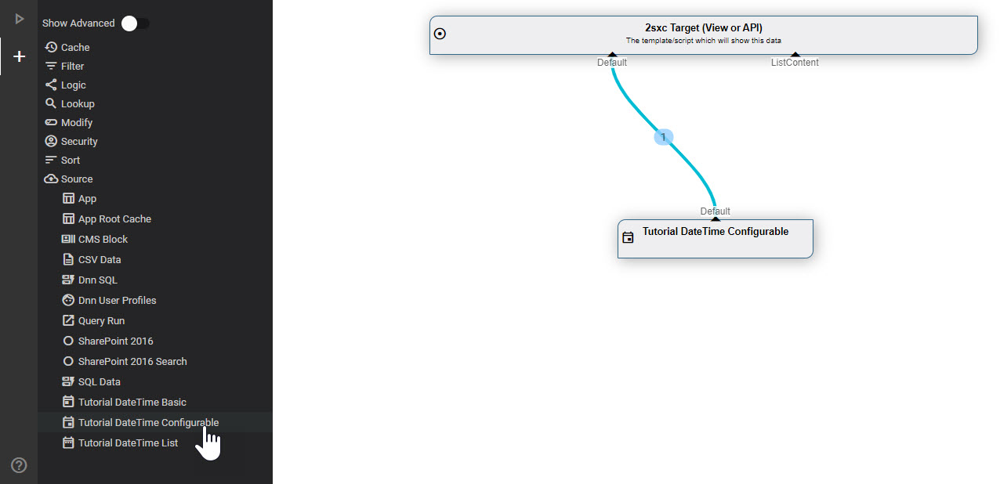
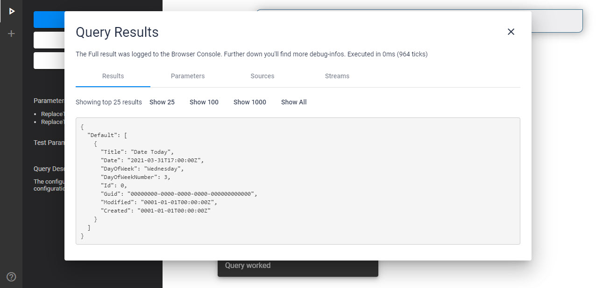
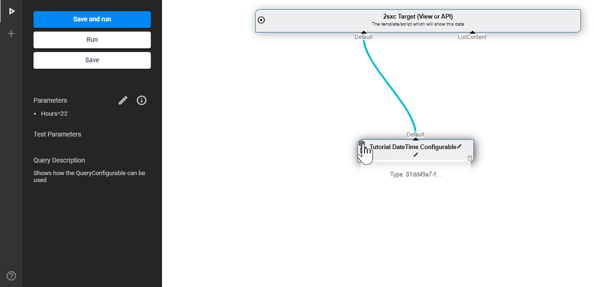
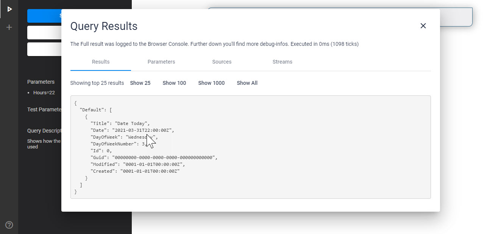
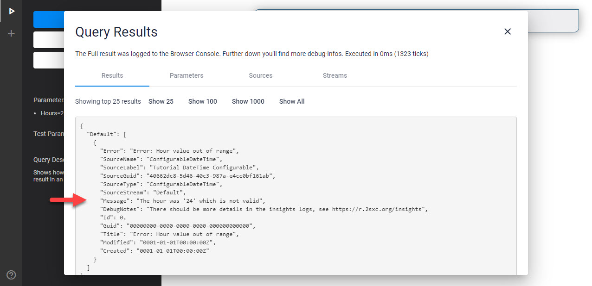

Warning
These documentations are for versions before 15.x. They don't apply to v15+ but are kept for reference. We highly recommend that you don't use them.
Tip
The code samples shown here are obsolete. But the code was updated to the latest version. So best get the real code from the DataSource Tutorial Repo
Tutorial Custom DataSources - Configurable
This explains the ConfigurableDateTime DataSource in the DataSource Tutorial.
This has a lot more features, like
- Properties on the DataSource object to configure it
- A Content-Type to let the admin configure it in the UI
- Code to load the configured settings
- Error handling code to provide good information if something is wrong
Add to VisualQuery
This is what it looks like in VisualQuery:
And this is what you see when you run it without configuration:
Running with Configuration from Params
Since this DataSource has configuration enabled, the UI knows that it can offer a Settings button:
You could just write a number like 14 but here we're showing how to use Query Parameters.
The Result would then look like this:
Running with Invalid Configuration
Here's an example with an invalid configuration where the Hour would be 24 (hours can only go from 0 to 23):

And here the resulting message which is optimized because the DataSource expected this mis-configuration:
Source of the ConfigurableDateTime DataSource
This is the code for the simplest DataSource:
using System;
using System.Collections.Generic;
using System.Collections.Immutable;
using ToSic.Eav.Data;
using ToSic.Eav.DataSources;
using ToSic.Eav.DataSources.Queries;
// Demo / Training Code to help you create our own DataSource
// You can find the newest version here: https://github.com/2sic/datasource-tutorial-basic
// there is also an App showing you how it would be used
// and how such a data-source is configured.
namespace ToSic.Tutorial.DataSource.Basic
{
// Note that this attribute is necessary for the DataSource to show up in the
[VisualQuery(
NameId = "81dd49a7-fa70-4e98-b73d-8299bb3231f0",
Icon = "event",
Type = DataSourceType.Source,
NiceName = "DateTime Configurable",
// Guid of the Content-Type which must be exported with this DataSource
// It's located in .data/contenttypes
// The class RegisterGlobalContentTypes ensures that 2sxc/EAV will find it
ConfigurationType = "677210a2-cf08-46e5-a6b2-86e56e27be99",
HelpLink = "https://go.2sxc.org/DsCustom")]
public class ConfigurableDateTime : ExternalData
{
#region Configuration-properties
private const string DesiredDateKey = "DesiredDate";
private const string HoursKey = "Hours";
/// <summary>
/// A piece of demo-configuration. It must always be stored/accessed from the Configuration dictionary
/// because everything in the config-dictionary will be token-resolved
/// </summary>
public string DesiredDate
{
get => Configuration[DesiredDateKey];
set => Configuration[DesiredDateKey] = value;
}
/// <summary>
/// A number-demo config. Note that we do error-checking and store it with SetError
/// </summary>
public int Hours
{
get
{
if (decimal.TryParse(Configuration[HoursKey], out var hour))
{
// check that it's a valid hour-range
if (hour >= 0 && hour <= 23) return (int)hour;
// If not, set the error, so that the code can later pick up the error-stream
SetError("Hour value out of range", $"The hour was '{hour}' which is not valid");
return 0;
}
// Apparently not a decimal, so set the error, so that the code can later pick up the error-stream
SetError("Hour value invalid", $"Tried to parse the hour, but couldn't. Value was '{Configuration[HoursKey]}'");
return 0;
}
set => Configuration[HoursKey] = value.ToString();
}
#endregion
/// <summary>
/// Constructs a new EntityIdFilter
/// </summary>
public ConfigurableDateTime()
{
// The out-list contains all out-streams.
// For performance reasons we want to make sure that they are NOT created unless accessed
// Because of this, we create a data-stream with a deferred call to GetEntities - like this:
Provide(GetEntities);
// Example of pre-configuring a text
// This will place the token to be resolved into the variable
// The tokens will be resolved before use
// The following token means:
// - Try to use the configured value from the setting on this data-source in the VisualQuery
// - if there is none, just use the value "Today"
ConfigMask(DesiredDateKey, "[Settings:DesiredDate||Today]");
// Example of pre-configuring a number value
// We can't just say AnotherDemoConfig = "text" because that would not compile since it expects a number
// So we just add the token to be resolved directly to the configuration list
ConfigMask(HoursKey, "[Settings:Hours||17]");
}
/// <summary>
/// This is the deferred call to retrieve entities
/// If you created the source correctly it won't be called unless accessed
/// This is recommended for performance reasons
/// We also recommend placing the result in the cache...
/// </summary>
/// <returns></returns>
private IImmutableList<IEntity> GetEntities()
{
// This will resolve the tokens before starting
Configuration.Parse();
// Here's your real code.
// Typically you will either perform some work with the In-streams
// or retrieve data from another source like XML, RSS, SQL, File-storage etc.
// Usually you would also need configuration from the UI - but sometimes not, especially if it's just for a very specific purpose
#region Your Custom Business Logic
try
{
// Check if we're trying to inform about today
if (DesiredDate != "Today")
return SetError("Demo Config not Today", "The Demo Configuration should be 'Today' or empty.");
// Get the hours - and if something is wrong, the ErrorStream will be pre-filled
var hours = Hours;
if (!ErrorStream.IsDefaultOrEmpty)
return ErrorStream;
// For this demo we'll treat the current time as UTC
var todayDate = DateTime.SpecifyKind(DateTime.Today, DateTimeKind.Utc);
// In this demo we'll just create 1 entity containing some values related to today
var today = new Dictionary<string, object>
{
{"Title", "Date Today"},
{"Date", todayDate.AddHours(hours)},
{"DayOfWeek", DateTime.Today.DayOfWeek.ToString()},
{"DayOfWeekNumber", DateTime.Today.DayOfWeek}
};
// ...now convert to an entity with the data prepared before
var ent = DataBuilder.Entity(today, titleField: "Title");
return new List<IEntity> { ent }.ToImmutableArray();
}
catch (Exception ex)
{
// if something happens, let's return this information as a result
return SetError("Unexpected Error", "The Configurable DateTime DataSource ran into an exception.", ex);
}
#endregion
}
}
}
This does a LOT more. Here the important bits
- The VisualQuery Attribute has a lot more information
- It has various properties like
Hourwhich will be populated by settings in the Constructor... - ...and they have features to detect errors and report them nicely
- The
GetEntities()safely checks if the RequiredInstream really exists - otherwise returns a clean error stream - The configuration is then used in the data returned
Read More
- Discover the Basic DataSourceTutorial with more examples
History
- Created 2017 for 2sxc 7
- Completely rebuilt for 2sxc 11.13 and VisualQuery 3